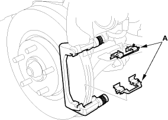
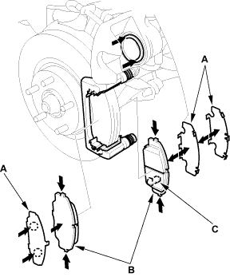

- Remove the pad retainers (A).

- Clean the caliper thoroughly; remove any rust and check for grooves and cracks.
- Check the brake disc for damage and cracks.
- Apply Dow Corning Molykote M77 grease to the retainers on their mating surfaces against the caliper bracket.
- Install the pad retainers. Wipe excess grease off the retainers. Contaminated brake discs and pads reduce stopping ability. Keep grease off the discs and pads.

- Apply Dow Corning Molykote M77 grease to both sides of the pad shim (A), the back of the pads (B), and the other areas indicated by the arrows.
Wipe excess grease off the shim. Contaminated brake discs and pads reduce stopping ability. Keep grease off the discs and pads.

- Install the brake pads and pad shim correctly. Install the pads with the wear indicators (C) on the inside.
If you are reusing the pads, always reinstall the brake pads in their original positions to prevent a momentary loss of braking efficiency.